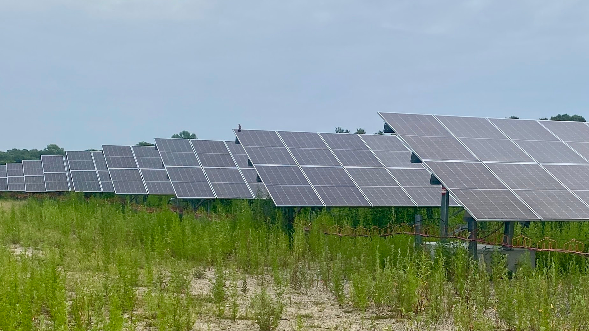
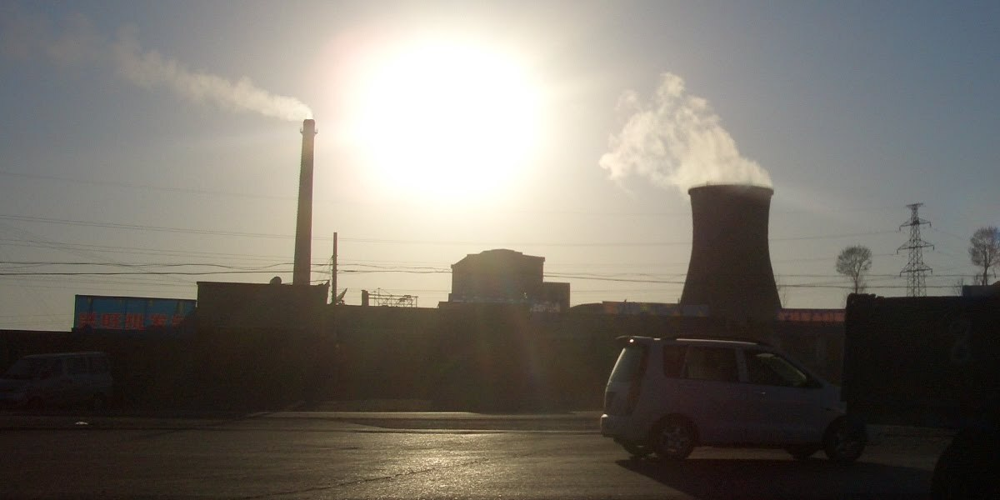
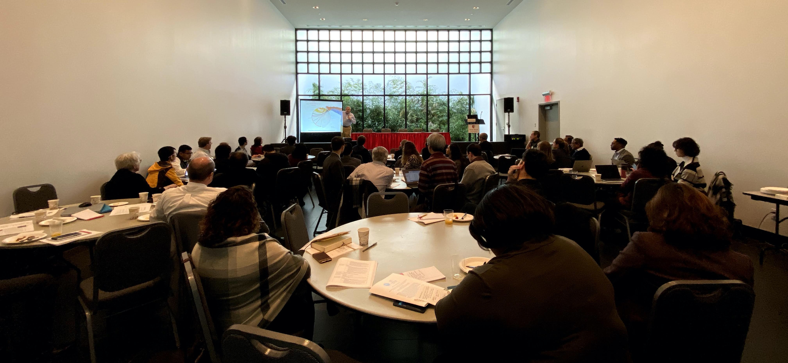

News
What’s new & In the news
Release
| Title | Date | Description | |
|---|---|---|---|
|
|
New Grant to Study the Drivers and Impacts of Domestic Clean Energy Manufacturing | 2025-12-17 | Gang He, Kaifang Luo, Michael Davidson, Ahmad Lashkaripour, Ilaria Mazzocco, and Minghao Qiu are awarded a $750,000 new Alfred P. Sloan Foundation grant to study the drivers and impacts of domestic clean manufacturing interventions, resulting from an Open Call on Energy System Interactions in the United States. |
|  | New Study Finds Imported Solar Panels Deliver Major Climate and Health Benefits to the U.S. | 2025-10-08 | New study published in One Earth showing that imported solar panels prevented nearly 600 premature deaths and delivered $28 billion in climate and health benefits to the United States. |
| Nature Comment: Can China Break the ‘Cost Curse’ of Nuclear Power? | 2025-07-28 | Comment published in Nature shows escalating construction expenses threaten to derail global progress on atomic energy. China offers lessons on how to rein in costs. | |
|  | New Study Shows Fewer Than 15% of China’s Coal Power Plant Workers Can Easily Transition to Green Jobs by 2060 | 2024-11-06 | Study published in One Earth shows less than 15% of China’s coal power plant workforce will find it easy to shift into green jobs, a coal power worker needs to travel 194 (178–242) km on average to access a green job. |

|
New Grant: Exploring Energy Burden Among the Older Adults and People with Disabilities in New York City Public Housing Communities | 2024-11-01 | Gang He, Kaifang Luo, Hilary Botein, and Frank Heiland were awarded a SSA grant |
| Baruch College Faculty Included in World’s Top Scientist List | 2024-10-22 | Dr. Gang He is included in Stanford University and Elsevier’s “World’s Top 2% Scientists” list for 2024 | |
| Taking a Global Look at Dry and Alternative Water Cooling of Power Plants | 2023-08-09 | Study published in Nature Water suggests integrating planning may reduce carbon emissions in the future | |
| Global Collaboration is Key to Saving Billions for Solar Module Production | 2022-10-26 | Study published in Nature quantifies for the first time past and future country cost savings to the solar industry from globalized supply chains. | |
| Energy Transition Away from Coal in China Will Yield Benefits | 2020-08-21 | In a perspective paper published in One Earth, an international scientific team contends that China needs to transition away from coal to help the world achieve global decarbonization and improve the nation’s environmental and human health. | |
| Study Shows Decrease in Renewable Energy Costs May Serve as an Accelerator for Clean Energy Expansion | 2020-06-01 | The study reveals fast decarbonization is both technically feasible and economically beneficial, which offers the prospect of large emissions mitigation with a global environmental impact. | |
|  | NSF Wokshop on Data Science Across the Undergraduate Curriculum | 2020-01-19 | On January 9-10, 2020, we hosted the NSF funded workshop entitled “Data Science Across the Undergraduate Curriculum: University-Industry Online Case Studies on Applications of Data Science.” |
No matching items
Media
| Title | Media | Author | Date | Description | |
|---|---|---|---|---|---|

|
US solar tariffs linked to preventable deaths, claim researchers | PV Magazine | 2025-11-04 | A more rigorous—and encouraging—analysis from researchers at the City University of New York found that solar panel imports into the United States displaced 305 TWh of fossil generation, avoided 178 million tons of CO2 emissions, and prevented 595 premature deaths between 2014 and 2022. The paper, Imported solar photovoltaics contributed to health and climate benefits in the United States, showed that 78% of solar panels deployed during this time were imports. As utility-scale solar grew from ‘nearly zero’ in 2010 to 3.4% of total U.S generation in 2022, those imported modules were critical. | |
| How China Raced Ahead of the U.S. on Nuclear Power | The New York Times | 2025-10-23 | The New York Times covered U.S. China’s nuclear power race and highlighted our work—reproducing our figure and citing our Nature Comment article on nuclear costs. | ||

|
Why nuclear is now a booming industry | The Economist | 2025-09-04 | The Economist covered the nuclear industry’s resurgence and highlighted our work—reproducing our figure and citing our Nature Comment article on nuclear costs. | |
| What the U.S.-China Agreement Means for Greenhouse Gas Emissions | Scientific American | 2023-11-16 | The two nations announced limited steps to address climate change. But even a modest agreement could have far-reaching effects. | ||
| Can the U.S. and China Cooperate on Green Technology Again? | Foreign Policy | 2023-09-21 | A study published in Nature last year found that if the United States, Germany, and China all decided to shift to fully domestic solar production starting in 2020, by 2030 global solar costs would be 20 percent to 30 percent higher. | ||

|
How Biden’s made-in-America solar strategy may backfire | E&E News | 2022-10-27 | A new study in Nature concludes that policies similar to ones the administration is considering could make solar panels 30 percent more expensive by the end of the decade. | |

|
New energy transition guidance; Five coal plants approved; Energy-efficiency targets raised | Carbon Brief | 2022-02-17 | Gang He told Carbon Brief: “There are other and better options: renewables are achieving grid parity which could accelerate a renewable-dominant pathway. Such a pathway is both technically feasible and economically beneficial to China’s development.” | |
| China creates vast research infrastructure to support ambitious climate goals | Nature | 2021-11-22 | Carbon-neutrality institutes, and other initiatives to support a pledge to achieve net zero by 2060, are popping up like mushrooms across China. | ||
| How China could be carbon neutral by mid-century | Nature | 2020-10-19 | Nature special report examines the role of renewables, nuclear power and carbon capture in reaching this ambitious goal. | ||
| China Says It Will Stop Releasing CO2 within 40 Years | Scientific American | 2020-09-23 | The surprise announcement vaults the country ahead of U.S. climate ambitions and could encourage developing countries to follow suit. | ||

|
Plummeting Renewable Energy, Battery Prices Mean China Could Hit 62% Clean Power And Cut Costs 11% By 2030 | Forbes | 2020-08-10 | New research shows plummeting clean energy prices mean China could reliably run its grids on at least 62% non-fossil electricity generation by 2030, while cutting costs 11% compared to a business-as-usual approach. Once again, it’s cheaper to save the climate than destroy it. | |
|
|
Surging coal use in China threatens global CO2 goals | E&E News | 2020-06-09 | The fast decrease in the cost of solar, wind and storage, and technological innovation has fundamentally changed the economics of renewables, said Gang He, our analysis shows that such a fast decarbonization and clean power transition is both technically feasible and economicallybeneficial. | |

|
China’s Path to Clean Energy May Be Smoother than We Previously Thought | Inside Climate News | 2020-06-04 | A new paper in the journal Nature Communications says the probable reality is much better than we previously thought, largely because of falling costs of wind, solar and battery storage. | |
| Bill Calls For An Emissions-Free NY By 2050 | WSHU Public Radio | 2019-02-18 | In addition to policy, technology, there are also behavior components to that. How we incentivize people to change their behavior and their lifestyle. | ||
| Where is the world’s greenest city? | The Guardian | 2015-04-02 | In a 2015 study published in the journal Ecological Indicators, scientists based at the Lawrence Berkeley National Laboratory in California have fine-tuned a potential method for assessing Chinese “eco-cities” using 33 key indicators. |
No matching items